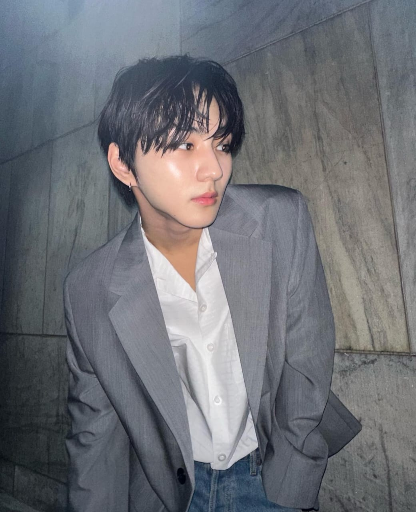
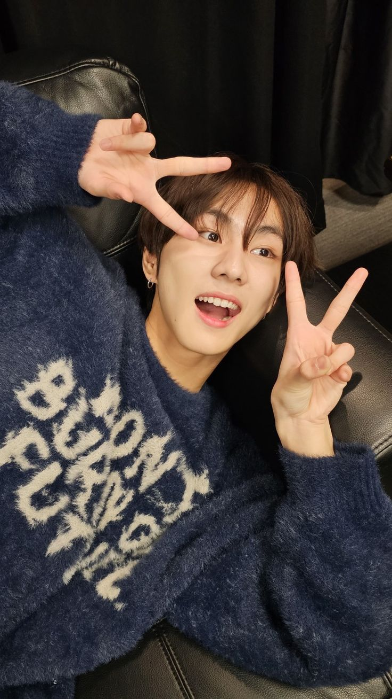

JUNGWON


Stage Name:
Jungwon
Birth Name:
Yang Jungwon
Date of Birth:
9th February, 2004
Birth Place:
Gwanak-gu, Seoul, South Korea
Nationality:
Korean
MBTI:
ISTJ
Zodiac Sign:
Aquarius
Position:
Leader
Blood group:
AB
Height:
175cm
Facts about Jungwon
He has an older sister (two years older).
Education:Namgang High School.
Nicknames: Garden (as his name means “garden” in Korean), Sheep Garden, Jung One, Yang Garden, Yang Chamber, Nyang Jungwon.
He started his trainee life on January 2017 (W Korea Interview).
He is a former SM Entertainment (2017-2018) and BigHit Entertainment (2018-2019) trainee.
He trained for a year and four months before taking part in I-LAND.
He ranked in first place in the final of I-LAND (1,417,620 votes).
He performed Jay Park‘s All I Wanna Do in the first episode of I-LAND with two eliminated contestants, Yoonwon and Taeyong.
His favorite memory from I-LAND was seeing Jay sleeping with his eyes open one night.
The other members thought he was cute the first time they met him.
His role model is BTS‘ Jungkook.
He’s charming in many different ways.
He can copy the sound of Squidward’s footsteps.
His favorite colors are blue and orange.
His favorite season is winter.
His most precious object is a backpack he’s used since fifth grade.
He used not to understand why idols felt energized by fans. He realized why after getting fan videos for himself.
His charming points are his dimple, his eye smile and his shoulders.
He’s good at singing, dancing and popping.
Jungwon did Taekwondo for 7 years and was an athlete for 4 years (Debut Showcase).
He likes watching movies and taking a walk when it’s raining.
His favorite ice-cream flavor is Mom is an Alien.
He likes all ENHYPEN members (especially Jake), taking socks off and curry.
He doesn’t like lying on a bed with socks on and chewing on food loudly.
He’d like to take a selca with fans after debut.
He’d like to visit Canada the most to see the auroras.